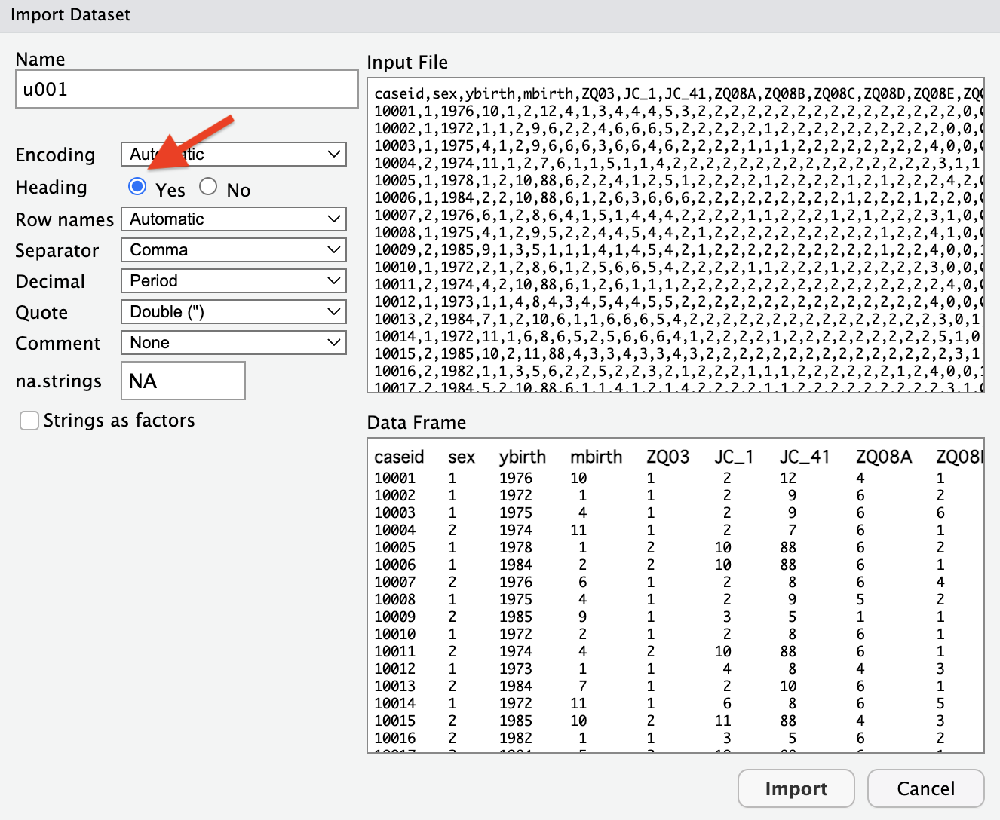

# パッケージの呼び出し
pacman::p_load(
here,
dplyr, # データ操作のための関数
readr, # csvファイルを読み込む．tidyverseとしてもよい．
haven # sav, dta, sasファイルなどを読み込む．
)3 データの読み込み
データの読み込みを行う際にreadrとhavenパッケージを用いる． readrパッケージのかわりにtidyverseパッケージを呼び出してもよい．
3.1 使用するデータ
東京大学社会科学研究所附属社会調査・データアーカイブ研究センター（the Center for Social Research and Data Archives: CSRDA）で公開されている「東大社研・若年パネル調査（JLPS-Y）wave1，2007（非制限公開疑似データ）」（調査番号：u001，寄託者：東京大学社会科学研究所パネル調査プロジェクト）を用いる．
3.2 データの保存先
R4SS：作業ディレクトリdata：データを保存するフォルダprocessed：加工したデータを保存するフォルダraw：加工前の生データを保存するフォルダu001_readme.docxu001.csv：csv形式のデータu001.dta：dta形式のデータ（Stata）u001.sav：sav形式のデータ（SPSS）u001c.pdf：調査票
scripts：Rスクリプトを保存するフォルダ
MACの画面だと Figure 3.1 のようになる．Rの基礎でhere()関数とdir_create()関数を組み合わせて作成している．ここのrawというフォルダにu001.zipを展開した中身を保存する．u001というフォルダは使用しない（使用してもよいがファイルの場所を間違えないようにすること．本資料では，rawのすぐ下にデータがあるように設定している）．
3.3 Import Datasetからデータを読み込む
hereをつかったり，ファイルのパスを書くことに慣れないうちは，自分でファイルを探して指定する方法が確実かもしれない． まずcsvの場合は，「File」\(\rightarrow\)「Import Dataset」\(\rightarrow\)「From text (base)…」か「File」\(\rightarrow\)「Import Dataset」\(\rightarrow\)「From text (readr)…」を使用する．
3.3.1 From text (base)…の場合
u001.csvを指定し「Open」を選択すると， Figure 3.2 のような画面が現れる．「Heading」は「Yes」とする．

右下の「Data Frame」に正しくデータが表示されているようであれば，「Import」を選択する． するとデータがソース画面に表示される．うまく読み込まれていそうであればデータは閉じてしまおう． コンソールには読み込みに用いたコードが残されているので，これをコピーしておこう．
u001 <- read.csv("~/GitHub/R4SS/data/raw/u001.csv")3.3.2 From text (readr)…の場合
右端の「Browse」からu001.csvを指定し「Open」を選択すると， Figure 3.3 のような画面が現れる．
そのまま「Import」を選択すればよい．ここでもデータがソースの別のタブで開かれるが，不要なので確認したら閉じてしまおう．コンソールには次のプログラムが残っているので，スクリプトにコピーしておこう．
library(readr)
u001 <- read_csv("data/raw/u001.csv")Rows: 1000 Columns: 72
── Column specification ────────────────────────────────────────────────────────
Delimiter: ","
dbl (72): caseid, sex, ybirth, mbirth, ZQ03, JC_1, JC_41, ZQ08A, ZQ08B, ZQ08...
ℹ Use `spec()` to retrieve the full column specification for this data.
ℹ Specify the column types or set `show_col_types = FALSE` to quiet this message.なおデフォルトではデータを代入するオブジェクトの名前はu001となっているが，コピーしたらdなど適当な分かりやすい名前に変更するとよい．
3.4 csvの場合
では直接パスを書き，データを読み込んでみる．もともとRに備わっているread.csvを使う方法とreadrのread_csvの2つの方法がある． tibble形式で読み込まれるread_csvを使用することを個人的には勧めたい．
3.4.1 read.csv
# read.csvでcsvデータを読み込む
d_csv_1 <- read.csv("data/raw/u001.csv")
# 確認
head(d_csv_1) caseid sex ybirth mbirth ZQ03 JC_1 JC_41 ZQ08A ZQ08B ZQ08C ZQ08D ZQ08E ZQ08F
1 10001 1 1976 10 1 2 12 4 1 3 4 4 4
2 10002 1 1972 1 1 2 9 6 2 2 4 6 6
3 10003 1 1975 4 1 2 9 6 6 6 3 6 6
4 10004 2 1974 11 1 2 7 6 1 1 5 1 1
5 10005 1 1978 1 2 10 88 6 2 2 4 1 2
6 10006 1 1984 2 2 10 88 6 1 2 6 3 6
ZQ08G ZQ08H ZQ11_A ZQ11_B ZQ11_C ZQ11_D ZQ11_E ZQ11_F ZQ11_G ZQ11_H ZQ11_I
1 5 3 2 2 2 2 2 2 2 2 2
2 6 5 2 2 2 2 2 1 2 2 2
3 4 6 2 2 2 2 1 1 1 2 2
4 4 2 2 2 2 2 2 2 2 2 2
5 5 1 2 2 2 2 1 2 2 2 2
6 6 6 2 2 2 2 2 2 2 2 2
ZQ11_J ZQ11_K ZQ11_L ZQ11_M ZQ11_N ZQ11_O ZQ12 ZQ14_1A ZQ14_1B ZQ14_1C
1 2 2 2 2 2 2 2 0 0 1
2 2 2 2 2 2 2 2 0 0 0
3 2 2 2 2 2 2 4 0 0 0
4 2 2 2 2 2 2 3 1 1 0
5 1 2 1 2 2 2 4 2 0 0
6 1 2 2 2 1 2 2 0 0 1
ZQ14_1D ZQ23A ZQ23B ZQ23C ZQ23D ZQ24 ZQ25 ZQ26A ZQ26B ZQ26C ZQ26D ZQ26E ZQ26F
1 0 5 5 5 4 1 1 4 5 3 5 3 4
2 1 3 5 2 2 1 3 5 5 2 5 1 5
3 0 3 2 2 2 1 3 5 5 4 5 3 5
4 0 3 5 2 2 1 2 3 5 2 4 2 4
5 0 5 8 5 5 1 2 3 3 4 3 3 4
6 0 4 8 3 2 1 4 3 4 3 4 3 5
ZQ30D ZQ35 ZQ39A ZQ42 ZQ43 ZQ47A ZQ47B ZQ47C ZQ50 ZQ52A ZQ52Y ZQ54A ZQ54B
1 2 4 4 9 2 6 5 8 2 2 51 1 2
2 1 5 3 1 1 9 5 10 2 2 51 1 2
3 1 4 5 9 4 6 3 6 2 2 56 3 5
4 2 5 3 3 3 6 8 9 2 2 48 6 1
5 4 5 4 2 2 1 99 99 1 8 888 8 8
6 4 7 4 2 3 2 15 10 1 8 888 8 8
ZQ54C ZQ54D ZQ61_A ZQ61_B ZQ61_C ZQ61_D ZQ61_E ZQ61_F ZQ61_G ZQ61_H ZQ61_I
1 9 9 1 2 2 2 2 2 2 2 2
2 2 4 1 2 2 2 2 2 2 2 2
3 3 2 1 2 2 2 2 2 2 2 2
4 5 4 1 2 2 2 2 2 2 2 2
5 8 8 2 2 2 1 2 2 2 2 2
6 8 8 1 2 2 2 2 2 2 2 2
ZQ62
1 3
2 2
3 2
4 4
5 1
6 2# データのクラス
class(d_csv_1)[1] "data.frame"hereを使用すれば次のように書ける．
d_csv_1 <- read.csv(here("data","raw","u001.csv"))3.4.2 read_csv
# read_csvでcsvデータを読み込む
d_csv_2 <- read_csv("data/raw/u001.csv")Rows: 1000 Columns: 72
── Column specification ────────────────────────────────────────────────────────
Delimiter: ","
dbl (72): caseid, sex, ybirth, mbirth, ZQ03, JC_1, JC_41, ZQ08A, ZQ08B, ZQ08...
ℹ Use `spec()` to retrieve the full column specification for this data.
ℹ Specify the column types or set `show_col_types = FALSE` to quiet this message.# 確認
head(d_csv_2)# A tibble: 6 × 72
caseid sex ybirth mbirth ZQ03 JC_1 JC_41 ZQ08A ZQ08B ZQ08C ZQ08D ZQ08E
<dbl> <dbl> <dbl> <dbl> <dbl> <dbl> <dbl> <dbl> <dbl> <dbl> <dbl> <dbl>
1 10001 1 1976 10 1 2 12 4 1 3 4 4
2 10002 1 1972 1 1 2 9 6 2 2 4 6
3 10003 1 1975 4 1 2 9 6 6 6 3 6
4 10004 2 1974 11 1 2 7 6 1 1 5 1
5 10005 1 1978 1 2 10 88 6 2 2 4 1
6 10006 1 1984 2 2 10 88 6 1 2 6 3
# ℹ 60 more variables: ZQ08F <dbl>, ZQ08G <dbl>, ZQ08H <dbl>, ZQ11_A <dbl>,
# ZQ11_B <dbl>, ZQ11_C <dbl>, ZQ11_D <dbl>, ZQ11_E <dbl>, ZQ11_F <dbl>,
# ZQ11_G <dbl>, ZQ11_H <dbl>, ZQ11_I <dbl>, ZQ11_J <dbl>, ZQ11_K <dbl>,
# ZQ11_L <dbl>, ZQ11_M <dbl>, ZQ11_N <dbl>, ZQ11_O <dbl>, ZQ12 <dbl>,
# ZQ14_1A <dbl>, ZQ14_1B <dbl>, ZQ14_1C <dbl>, ZQ14_1D <dbl>, ZQ23A <dbl>,
# ZQ23B <dbl>, ZQ23C <dbl>, ZQ23D <dbl>, ZQ24 <dbl>, ZQ25 <dbl>, ZQ26A <dbl>,
# ZQ26B <dbl>, ZQ26C <dbl>, ZQ26D <dbl>, ZQ26E <dbl>, ZQ26F <dbl>, …# データのクラス
class(d_csv_2)[1] "spec_tbl_df" "tbl_df" "tbl" "data.frame" hereを使用すれば次のように書ける．
d_csv_2 <- read_csv(here("data","raw","u001.csv"))Rows: 1000 Columns: 72
── Column specification ────────────────────────────────────────────────────────
Delimiter: ","
dbl (72): caseid, sex, ybirth, mbirth, ZQ03, JC_1, JC_41, ZQ08A, ZQ08B, ZQ08...
ℹ Use `spec()` to retrieve the full column specification for this data.
ℹ Specify the column types or set `show_col_types = FALSE` to quiet this message.3.5 dta (Stata) の場合
値ラベルや変数ラベルといったメタデータ（データについてのデータ）も一緒に読み込まれるので，なれたらこちらを使うのも良いだろう．ただし読み込んだメタデータだけをみるだけではなく，基礎集計表やコードブックを参照するのがよいだろう．
# read_dtaでdtaデータを読み込む
d_dta <- read_dta("data/raw/u001.dta")
# 確認
head(d_dta)# A tibble: 6 × 72
caseid sex ybirth mbirth ZQ03 JC_1 JC_41 ZQ08A ZQ08B ZQ08C
<dbl> <dbl+l> <dbl> <dbl> <dbl+l> <dbl+lb> <dbl+lb> <dbl+l> <dbl+l> <dbl+l>
1 10001 1 [mal… 1976 10 1 [し… 2 [正… 12 … 4 [週… 1 [毎… 3 [週…
2 10002 1 [mal… 1972 1 1 [し… 2 [正… 9 … 6 [ほ… 2 [週… 2 [週…
3 10003 1 [mal… 1975 4 1 [し… 2 [正… 9 … 6 [ほ… 6 [ほ… 6 [ほ…
4 10004 2 [fem… 1974 11 1 [し… 2 [正… 7 … 6 [ほ… 1 [毎… 1 [毎…
5 10005 1 [mal… 1978 1 2 [し… 10 [無… 88 [非… 6 [ほ… 2 [週… 2 [週…
6 10006 1 [mal… 1984 2 2 [し… 10 [無… 88 [非… 6 [ほ… 1 [毎… 2 [週…
# ℹ 62 more variables: ZQ08D <dbl+lbl>, ZQ08E <dbl+lbl>, ZQ08F <dbl+lbl>,
# ZQ08G <dbl+lbl>, ZQ08H <dbl+lbl>, ZQ11_A <dbl+lbl>, ZQ11_B <dbl+lbl>,
# ZQ11_C <dbl+lbl>, ZQ11_D <dbl+lbl>, ZQ11_E <dbl+lbl>, ZQ11_F <dbl+lbl>,
# ZQ11_G <dbl+lbl>, ZQ11_H <dbl+lbl>, ZQ11_I <dbl+lbl>, ZQ11_J <dbl+lbl>,
# ZQ11_K <dbl+lbl>, ZQ11_L <dbl+lbl>, ZQ11_M <dbl+lbl>, ZQ11_N <dbl+lbl>,
# ZQ11_O <dbl+lbl>, ZQ12 <dbl+lbl>, ZQ14_1A <dbl+lbl>, ZQ14_1B <dbl+lbl>,
# ZQ14_1C <dbl+lbl>, ZQ14_1D <dbl+lbl>, ZQ23A <dbl+lbl>, ZQ23B <dbl+lbl>, …# データのクラス
class(d_dta)[1] "tbl_df" "tbl" "data.frame"Stataのファイルに含まれているラベルの情報も読み込まれる．hereを使用すれば次のように書ける．
d_dta <- read_dta(here("data","raw","u001.dta"))3.6 sav (SPSS) の場合
# read_savでsavデータを読み込む
d_sav <- read_sav("data/raw/u001.sav")
# 確認
head(d_sav)# A tibble: 6 × 72
caseid sex ybirth mbirth ZQ03 JC_1 JC_41 ZQ08A ZQ08B ZQ08C
<dbl> <dbl+l> <dbl> <dbl> <dbl+l> <dbl+lb> <dbl+lb> <dbl+l> <dbl+l> <dbl+l>
1 10001 1 [mal… 1976 10 1 [し… 2 [正… 12 … 4 [週… 1 [毎… 3 [週…
2 10002 1 [mal… 1972 1 1 [し… 2 [正… 9 … 6 [ほ… 2 [週… 2 [週…
3 10003 1 [mal… 1975 4 1 [し… 2 [正… 9 … 6 [ほ… 6 [ほ… 6 [ほ…
4 10004 2 [fem… 1974 11 1 [し… 2 [正… 7 … 6 [ほ… 1 [毎… 1 [毎…
5 10005 1 [mal… 1978 1 2 [し… 10 [無… 88 [非… 6 [ほ… 2 [週… 2 [週…
6 10006 1 [mal… 1984 2 2 [し… 10 [無… 88 [非… 6 [ほ… 1 [毎… 2 [週…
# ℹ 62 more variables: ZQ08D <dbl+lbl>, ZQ08E <dbl+lbl>, ZQ08F <dbl+lbl>,
# ZQ08G <dbl+lbl>, ZQ08H <dbl+lbl>, ZQ11_A <dbl+lbl>, ZQ11_B <dbl+lbl>,
# ZQ11_C <dbl+lbl>, ZQ11_D <dbl+lbl>, ZQ11_E <dbl+lbl>, ZQ11_F <dbl+lbl>,
# ZQ11_G <dbl+lbl>, ZQ11_H <dbl+lbl>, ZQ11_I <dbl+lbl>, ZQ11_J <dbl+lbl>,
# ZQ11_K <dbl+lbl>, ZQ11_L <dbl+lbl>, ZQ11_M <dbl+lbl>, ZQ11_N <dbl+lbl>,
# ZQ11_O <dbl+lbl>, ZQ12 <dbl+lbl>, ZQ14_1A <dbl+lbl>, ZQ14_1B <dbl+lbl>,
# ZQ14_1C <dbl+lbl>, ZQ14_1D <dbl+lbl>, ZQ23A <dbl+lbl>, ZQ23B <dbl+lbl>, …# データのクラス
class(d_sav)[1] "tbl_df" "tbl" "data.frame"Stataと同様にSPSSのファイルに含まれているラベルの情報も読み込まれる． hereを使用すれば次のように書ける．
d_sav <- read_sav(here("data","raw","u001.sav"))3.7 ラベルを取り除きたい
ラベルを取り除きたい場合は，zap_label()関数やzap_labels()関数を用いる．
zap_label()：変数ラベルを取り除くzap_labels()：値ラベルを取り除く
以下では，d_savにzap_label()関数とzap_labels()関数を適用し，変数ラベルと値ラベルを取り除き，d_sav_nolabという新しいオブジェクトとして保存している．
d_sav_nolab <- d_sav |> zap_label() |> zap_labels()
d_sav_nolab# A tibble: 1,000 × 72
caseid sex ybirth mbirth ZQ03 JC_1 JC_41 ZQ08A ZQ08B ZQ08C ZQ08D ZQ08E
<dbl> <dbl> <dbl> <dbl> <dbl> <dbl> <dbl> <dbl> <dbl> <dbl> <dbl> <dbl>
1 10001 1 1976 10 1 2 12 4 1 3 4 4
2 10002 1 1972 1 1 2 9 6 2 2 4 6
3 10003 1 1975 4 1 2 9 6 6 6 3 6
4 10004 2 1974 11 1 2 7 6 1 1 5 1
5 10005 1 1978 1 2 10 88 6 2 2 4 1
6 10006 1 1984 2 2 10 88 6 1 2 6 3
7 10007 2 1976 6 1 2 8 6 4 1 5 1
8 10008 1 1975 4 1 2 9 5 2 2 4 4
9 10009 2 1985 9 1 3 5 1 1 1 4 1
10 10010 1 1972 2 1 2 8 6 1 2 5 6
# ℹ 990 more rows
# ℹ 60 more variables: ZQ08F <dbl>, ZQ08G <dbl>, ZQ08H <dbl>, ZQ11_A <dbl>,
# ZQ11_B <dbl>, ZQ11_C <dbl>, ZQ11_D <dbl>, ZQ11_E <dbl>, ZQ11_F <dbl>,
# ZQ11_G <dbl>, ZQ11_H <dbl>, ZQ11_I <dbl>, ZQ11_J <dbl>, ZQ11_K <dbl>,
# ZQ11_L <dbl>, ZQ11_M <dbl>, ZQ11_N <dbl>, ZQ11_O <dbl>, ZQ12 <dbl>,
# ZQ14_1A <dbl>, ZQ14_1B <dbl>, ZQ14_1C <dbl>, ZQ14_1D <dbl>, ZQ23A <dbl>,
# ZQ23B <dbl>, ZQ23C <dbl>, ZQ23D <dbl>, ZQ24 <dbl>, ZQ25 <dbl>, …3.8 ラベルを加工したい
labelledパッケージを用いる．
library(labelled)3.8.1 変数ラベルの加工
# すべての変数ラベルを確認
var_label(d_sav)$caseid
NULL
$sex
[1] "問1(1)_性別"
$ybirth
[1] "問1(2)_生年"
$mbirth
[1] "問1(2)_生月"
$ZQ03
[1] "問3_就業状況"
$JC_1
[1] "問4A(1)_現職・働き方"
$JC_41
[1] "問4A(4-1)_現職・従事時間（1日あたり）"
$ZQ08A
[1] "問8A_ふだんの生活での頻度―運動"
$ZQ08B
[1] "問8B_ふだんの生活での頻度―1日に3食を食べる"
$ZQ08C
[1] "問8C_ふだんの生活での頻度―栄養バランスの取れた食事を取る"
$ZQ08D
[1] "問8D_ふだんの生活での頻度―カップ麺やファーストフードを食べる"
$ZQ08E
[1] "問8E_ふだんの生活での頻度―食事の用意"
$ZQ08F
[1] "問8F_ふだんの生活での頻度―洗濯"
$ZQ08G
[1] "問8G_ふだんの生活での頻度―家の掃除"
$ZQ08H
[1] "問8H_ふだんの生活での頻度―日用品・食料品の買い物"
$ZQ11_A
[1] "問11-1_今までの経験―親が失業した／親が事業で失敗した"
$ZQ11_B
[1] "問11-2_今までの経験―親が離婚した"
$ZQ11_C
[1] "問11-3_今までの経験―親が再婚した"
$ZQ11_D
[1] "問11-4_今までの経験―自分が事業で失敗した"
$ZQ11_E
[1] "問11-5_今までの経験―自分が失業した"
$ZQ11_F
[1] "問11-6_今までの経験―自分が転職した"
$ZQ11_G
[1] "問11-7_今までの経験―自分が同棲した"
$ZQ11_H
[1] "問11-8_今までの経験―自分が離婚した"
$ZQ11_I
[1] "問11-9_今までの経験―自分が再婚した"
$ZQ11_J
[1] "問11-10_今までの経験―自分が学校でいじめを受けた"
$ZQ11_K
[1] "問11-11_今までの経験―自分が大きな事故や災害にあった"
$ZQ11_L
[1] "問11-12_今までの経験―自分が暴行・強盗・恐喝などの犯罪被害にあった"
$ZQ11_M
[1] "問11-13_今までの経験―自分が手術や長期療養を要する病気・ケガをした"
$ZQ11_N
[1] "問11-14_今までの経験―自分が家族の看病・介護をした"
$ZQ11_O
[1] "問11-15_今までの経験―その他大きな出来事"
$ZQ12
[1] "問12_現在の暮らしむき"
$ZQ14_1A
[1] "問14(1)_兄の人数"
$ZQ14_1B
[1] "問14(1)_姉の人数"
$ZQ14_1C
[1] "問14(1)_弟の人数"
$ZQ14_1D
[1] "問14(1)_妹の人数"
$ZQ23A
[1] "問23_最後に通った学校―本人"
$ZQ23B
[1] "問23_最後に通った学校―配偶者"
$ZQ23C
[1] "問23_最後に通った学校―父親"
$ZQ23D
[1] "問23_最後に通った学校―母親"
$ZQ24
[1] "問24_最後に通った学校を卒業したか"
$ZQ25
[1] "問25_自分の健康状態"
$ZQ26A
[1] "問26A_過去1ヶ月間―かなり神経質であったこと"
$ZQ26B
[1] "問26B_過去1ヶ月間―どうにもならないくらい気分が落ち込んでいたこと"
$ZQ26C
[1] "問26C_過去1ヶ月間―落ち着いていておだやかな気分であったこと"
$ZQ26D
[1] "問26D_過去1ヶ月間―落ち込んで、憂鬱な気分であったこと"
$ZQ26E
[1] "問26E_過去1ヶ月間―楽しい気分であったこと"
$ZQ26F
[1] "問26F_過去1ヶ月間―健康上の理由で、家事や仕事などが制限されたこと"
$ZQ30D
[1] "問30D_現在の満足度―生活全般"
$ZQ35
[1] "問35_自分自身の階層の位置づけ"
$ZQ39A
[1] "問39A_男性の仕事は収入を得ること、女性の仕事や家庭と家族の面倒をみることだ"
$ZQ42
[1] "問42_ふだん支持している政党"
$ZQ43
[1] "問43_政治上の出来事への感心"
$ZQ47A
[1] "問47_過去1年間の収入―本人"
$ZQ47B
[1] "問47_過去1年間の収入―配偶者"
$ZQ47C
[1] "問47_過去1年間の収入―世帯全体"
$ZQ50
[1] "問50_婚姻状態"
$ZQ52A
[1] "問52_配偶者生年―元号"
$ZQ52Y
[1] "問52_配偶者生年―年"
$ZQ54A
[1] "問54A_頻度―配偶者が食事の用意"
$ZQ54B
[1] "問54B_頻度―洗濯"
$ZQ54C
[1] "問54C_頻度―家の掃除"
$ZQ54D
[1] "問54D_頻度―日用品・食料品の買い物"
$ZQ61_A
[1] "問61-1_10年後の働き方―正社員・正職員として働いていたい"
$ZQ61_B
[1] "問61-2_10年後の働き方―自分で事業をおこしていたい"
$ZQ61_C
[1] "問61-3_10年後の働き方―親の家業を継いでいたい"
$ZQ61_D
[1] "問61-4_10年後の働き方―独立して一人で仕事をしていたい"
$ZQ61_E
[1] "問61-5_10年後の働き方―アルバイトやパートで働いていたい"
$ZQ61_F
[1] "問61-6_10年後の働き方―専業主婦・主夫でいたい"
$ZQ61_G
[1] "問61-7_10年後の働き方―働かないでいたい"
$ZQ61_H
[1] "問61-8_10年後の働き方―その他"
$ZQ61_I
[1] "問61-9_10年後の働き方―わからない"
$ZQ62
[1] "問62_10年後の自分の暮らしむき"var_label(d_sav$sex)[1] "問1(1)_性別"# 変数のラベルにアクセスして修正
var_label(d_sav$sex) <- "問1(1)_性別（Male = 男性, Female = 女性）"
var_label(d_sav$sex)[1] "問1(1)_性別（Male = 男性, Female = 女性）"str(d_sav$sex) dbl+lbl [1:1000] 1, 1, 1, 2, 1, 1, 2, 1, 2, 1, 2, 1, 2, 1, 2, 2, 2, 2, 1, ...
@ label : chr "問1(1)_性別（Male = 男性, Female = 女性）"
@ format.spss : chr "F8.0"
@ display_width: int 10
@ labels : Named num [1:2] 1 2
..- attr(*, "names")= chr [1:2] "male" "female"3.8.2 値ラベルの加工
# すべての値ラベルを確認
d_sav |> val_labels()$caseid
NULL
$sex
male female
1 2
$ybirth
NULL
$mbirth
NULL
$ZQ03
している していない
1 2
$JC_1
経営者，役員 正社員・正職員
1 2
パート・アルバイト・契約・臨時・嘱託 派遣社員
3 4
請負社員 自営業主・自由業者
5 6
家族従事者 内職
7 8
その他 無職（学生は除く）
9 10
学生（働いていない） 学生（現在非正規で働いている）
11 12
非該当 無回答
88 99
$JC_41
非該当 無回答
88 99
$ZQ08A
毎日 週に5～6日 週に3～4日 週に1～2日 月に1～3日
1 2 3 4 5
ほとんどしない 無回答
6 9
$ZQ08B
毎日 週に5～6日 週に3～4日 週に1～2日 月に1～3日
1 2 3 4 5
ほとんどしない 無回答
6 9
$ZQ08C
毎日 週に5～6日 週に3～4日 週に1～2日 月に1～3日
1 2 3 4 5
ほとんどしない 無回答
6 9
$ZQ08D
毎日 週に5～6日 週に3～4日 週に1～2日 月に1～3日
1 2 3 4 5
ほとんどしない 無回答
6 9
$ZQ08E
毎日 週に5～6日 週に3～4日 週に1～2日 月に1～3日
1 2 3 4 5
ほとんどしない 無回答
6 9
$ZQ08F
毎日 週に5～6日 週に3～4日 週に1～2日 月に1～3日
1 2 3 4 5
ほとんどしない 無回答
6 9
$ZQ08G
毎日 週に5～6日 週に3～4日 週に1～2日 月に1～3日
1 2 3 4 5
ほとんどしない 無回答
6 9
$ZQ08H
毎日 週に5～6日 週に3～4日 週に1～2日 月に1～3日
1 2 3 4 5
ほとんどしない 無回答
6 9
$ZQ11_A
○選択 非選択
1 2
$ZQ11_B
○選択 非選択
1 2
$ZQ11_C
○選択 非選択
1 2
$ZQ11_D
○選択 非選択
1 2
$ZQ11_E
○選択 非選択
1 2
$ZQ11_F
○選択 非選択
1 2
$ZQ11_G
○選択 非選択
1 2
$ZQ11_H
○選択 非選択
1 2
$ZQ11_I
○選択 非選択
1 2
$ZQ11_J
○選択 非選択
1 2
$ZQ11_K
○選択 非選択
1 2
$ZQ11_L
○選択 非選択
1 2
$ZQ11_M
○選択 非選択
1 2
$ZQ11_N
○選択 非選択
1 2
$ZQ11_O
○選択 非選択
1 2
$ZQ12
豊か やや豊か ふつう やや貧しい 貧しい 無回答
1 2 3 4 5 9
$ZQ14_1A
無回答
99
$ZQ14_1B
無回答
99
$ZQ14_1C
無回答
99
$ZQ14_1D
無回答
99
$ZQ23A
中学校 高等学校
1 2
専修学校（専門学校） 短期大学・高等専門学校（5年制）
3 4
大学 大学院
5 6
わからない 無回答
7 9
$ZQ23B
中学校 高等学校
1 2
専修学校（専門学校） 短期大学・高等専門学校（5年制）
3 4
大学 大学院
5 6
わからない 配偶者はいない
7 8
無回答
9
$ZQ23C
中学校 高等学校
1 2
専修学校（専門学校） 短期大学・高等専門学校（5年制）
3 4
大学 大学院
5 6
わからない 無回答
7 9
$ZQ23D
中学校 高等学校
1 2
専修学校（専門学校） 短期大学・高等専門学校（5年制）
3 4
大学 大学院
5 6
わからない 無回答
7 9
$ZQ24
卒業した 中退した 在学中 無回答
1 2 3 9
$ZQ25
とても良い まあ良い 普通 あまり良くない 悪い
1 2 3 4 5
無回答
9
$ZQ26A
いつもあった ほとんどいつもあった ときどきあった
1 2 3
まれにあった まったくなかった 無回答
4 5 9
$ZQ26B
いつもあった ほとんどいつもあった ときどきあった
1 2 3
まれにあった まったくなかった 無回答
4 5 9
$ZQ26C
いつもあった ほとんどいつもあった ときどきあった
1 2 3
まれにあった まったくなかった 無回答
4 5 9
$ZQ26D
いつもあった ほとんどいつもあった ときどきあった
1 2 3
まれにあった まったくなかった 無回答
4 5 9
$ZQ26E
いつもあった ほとんどいつもあった ときどきあった
1 2 3
まれにあった まったくなかった 無回答
4 5 9
$ZQ26F
いつもあった ほとんどいつもあった ときどきあった
1 2 3
まれにあった まったくなかった 無回答
4 5 9
$ZQ30D
満足している どちらかといえば満足している
1 2
どちらともいえない どちらかといえば不満である
3 4
不満である 無回答
5 9
$ZQ35
無回答
99
$ZQ39A
そう思う どちらかといえばそう思う
1 2
どちらともいえない どちらかといえばそう思わない
3 4
そう思わない わからない
5 6
無回答
9
$ZQ42
自民党 民主党 公明党
1 2 3
共産党 社民党 国民新党
4 5 6
新党日本 その他の政党 特に支持する政党はない
7 8 9
わからない 無回答
10 99
$ZQ43
つねに関心を払っている ときどき関心を払っている
1 2
たまに関心を払っている ほとんど関心を払っていない
3 4
無回答
9
$ZQ47A
なし 25万円未満
1 2
50万円くらい（25～75万円未満） 100万円くらい（75～150万円未満）
3 4
200万円くらい（150～250万円未満） 300万円くらい（250～350万円未満）
5 6
400万円くらい（350～450万円未満） 500万円くらい（450～600万円未満）
7 8
700万円くらい（600～850万円未満） 1,000万円くらい（850～1,250万円未満）
9 10
1,500万円くらい（1,250～1,750万円未満） 2,000万円くらい（1,750～2,250万円未満）
11 12
2,250万円以上 わからない
13 14
無回答
99
$ZQ47B
なし 25万円未満
1 2
50万円くらい（25～75万円未満） 100万円くらい（75～150万円未満）
3 4
200万円くらい（150～250万円未満） 300万円くらい（250～350万円未満）
5 6
400万円くらい（350～450万円未満） 500万円くらい（450～600万円未満）
7 8
700万円くらい（600～850万円未満） 1,000万円くらい（850～1,250万円未満）
9 10
1,500万円くらい（1,250～1,750万円未満） 2,000万円くらい（1,750～2,250万円未満）
11 12
2,250万円以上 わからない
13 14
配偶者はいない 無回答
15 99
$ZQ47C
なし 25万円未満
1 2
50万円くらい（25～75万円未満） 100万円くらい（75～150万円未満）
3 4
200万円くらい（150～250万円未満） 300万円くらい（250～350万円未満）
5 6
400万円くらい（350～450万円未満） 500万円くらい（450～600万円未満）
7 8
700万円くらい（600～850万円未満） 1,000万円くらい（850～1,250万円未満）
9 10
1,500万円くらい（1,250～1,750万円未満） 2,000万円くらい（1,750～2,250万円未満）
11 12
2,250万円以上 わからない
13 14
無回答
99
$ZQ50
未婚 既婚（配偶者あり） 死別 離別
1 2 3 4
$ZQ52A
西暦 昭和 平成 非該当 無回答
1 2 3 8 9
$ZQ52Y
非該当 無回答
888 999
$ZQ54A
毎日 週に5～6日 週に3～4日 週に1～2日 月に1～3日
1 2 3 4 5
ほとんどしない 非該当 無回答
6 8 9
$ZQ54B
毎日 週に5～6日 週に3～4日 週に1～2日 月に1～3日
1 2 3 4 5
ほとんどしない 非該当 無回答
6 8 9
$ZQ54C
毎日 週に5～6日 週に3～4日 週に1～2日 月に1～3日
1 2 3 4 5
ほとんどしない 非該当 無回答
6 8 9
$ZQ54D
毎日 週に5～6日 週に3～4日 週に1～2日 月に1～3日
1 2 3 4 5
ほとんどしない 非該当 無回答
6 8 9
$ZQ61_A
○選択 非選択 無回答
1 2 9
$ZQ61_B
○選択 非選択 無回答
1 2 9
$ZQ61_C
○選択 非選択 無回答
1 2 9
$ZQ61_D
○選択 非選択 無回答
1 2 9
$ZQ61_E
○選択 非選択 無回答
1 2 9
$ZQ61_F
○選択 非選択 無回答
1 2 9
$ZQ61_G
○選択 非選択 無回答
1 2 9
$ZQ61_H
○選択 非選択 無回答
1 2 9
$ZQ61_I
○選択 非選択 無回答
1 2 9
$ZQ62
良くなる 少し良くなる 変わらない 少し悪くなる 悪くなる 無回答
1 2 3 4 5 9 # sexのラベルを確認
d_sav$sex |> val_labels() male female
1 2 # 変数のラベルにアクセスして修正
val_label(d_sav$sex, 1) <- "Male"
val_label(d_sav$sex, 2) <- "Female"
# 修正後
d_sav$sex |> val_labels() Male Female
1 2 d_sav |> dplyr::count(sex)# A tibble: 2 × 2
sex n
<dbl+lbl> <int>
1 1 [Male] 499
2 2 [Female] 501str(d_sav$sex) dbl+lbl [1:1000] 1, 1, 1, 2, 1, 1, 2, 1, 2, 1, 2, 1, 2, 1, 2, 2, 2, 2, 1, ...
@ labels: Named num [1:2] 1 2
..- attr(*, "names")= chr [1:2] "Male" "Female"
@ label : chr "問1(1)_性別（Male = 男性, Female = 女性）"3.9 ロングデータの作成
パネルデータで分析を行う場合に，ロング形式のデータにしたほうがよい． pivot_longerを使えば簡単にロング形式のデータが作成できる．
https://r4ds.hadley.nz/data-tidy.html#sec-pivoting を参照．
まずはidと必要な変数zq1，zq5，aq1，aq5を準備する． transmuteで必要があれば変換して，新たな名前を与える．この時変数名__年のようにする．_でもよいが，その場合は他の変数に_が含まれていないことを確認する．
library(tidyverse)── Attaching core tidyverse packages ──────────────────────── tidyverse 2.0.0 ──
✔ forcats 1.0.0 ✔ stringr 1.5.1
✔ ggplot2 3.5.1 ✔ tibble 3.2.1
✔ lubridate 1.9.3 ✔ tidyr 1.3.1
✔ purrr 1.0.2
── Conflicts ────────────────────────────────────────── tidyverse_conflicts() ──
✖ dplyr::filter() masks stats::filter()
✖ dplyr::lag() masks stats::lag()
ℹ Use the conflicted package (<http://conflicted.r-lib.org/>) to force all conflicts to become errorsd_wide <- tibble(
id = 1:10,
zq1 = rnorm(10),
zq5 = rbinom(10, size = 1, prob = .5),
aq1 = rnorm(10),
aq5 = rbinom(10, size = 1, prob = .5)
)
d_wide# A tibble: 10 × 5
id zq1 zq5 aq1 aq5
<int> <dbl> <int> <dbl> <int>
1 1 -0.0745 1 1.00 1
2 2 -1.20 0 -1.54 1
3 3 -1.28 1 1.35 0
4 4 -0.163 0 0.531 0
5 5 0.594 1 0.632 1
6 6 0.0291 0 0.610 1
7 7 -0.845 0 -1.17 0
8 8 0.900 0 -1.57 0
9 9 -1.18 1 0.668 1
10 10 1.25 1 -0.296 1d_long <- d_wide |>
transmute(id,
y__2007 = zq1,
x__2007 = zq5,
y__2008 = aq1,
x__2008 = aq5) |>
pivot_longer(
cols = y__2007:x__2008,
names_to = c(".value", "year"),
names_sep = "__",
values_drop_na = TRUE
) |>
mutate(year = parse_number(year))
d_long# A tibble: 20 × 4
id year y x
<int> <dbl> <dbl> <int>
1 1 2007 -0.0745 1
2 1 2008 1.00 1
3 2 2007 -1.20 0
4 2 2008 -1.54 1
5 3 2007 -1.28 1
6 3 2008 1.35 0
7 4 2007 -0.163 0
8 4 2008 0.531 0
9 5 2007 0.594 1
10 5 2008 0.632 1
11 6 2007 0.0291 0
12 6 2008 0.610 1
13 7 2007 -0.845 0
14 7 2008 -1.17 0
15 8 2007 0.900 0
16 8 2008 -1.57 0
17 9 2007 -1.18 1
18 9 2008 0.668 1
19 10 2007 1.25 1
20 10 2008 -0.296 1次のようにseparate()関数を用いることもできる．
d_wide |>
transmute(id,
y__2007 = zq1,
x__2007 = zq5,
y__2008 = aq1,
x__2008 = aq5) |>
pivot_longer(cols = y__2007:x__2008) |>
separate(name, into = c("var", "year")) |>
pivot_wider(id_cols = c(id, year),
names_from = var,
values_from = value) |>
mutate(year = parse_number(year))# A tibble: 20 × 4
id year y x
<int> <dbl> <dbl> <dbl>
1 1 2007 -0.0745 1
2 1 2008 1.00 1
3 2 2007 -1.20 0
4 2 2008 -1.54 1
5 3 2007 -1.28 1
6 3 2008 1.35 0
7 4 2007 -0.163 0
8 4 2008 0.531 0
9 5 2007 0.594 1
10 5 2008 0.632 1
11 6 2007 0.0291 0
12 6 2008 0.610 1
13 7 2007 -0.845 0
14 7 2008 -1.17 0
15 8 2007 0.900 0
16 8 2008 -1.57 0
17 9 2007 -1.18 1
18 9 2008 0.668 1
19 10 2007 1.25 1
20 10 2008 -0.296 1なお，パネル固定効果モデルはplmパッケージのplm，estimatrパッケージのlm_robust，fixestパッケージのfeolsで実行できる．feolsであると早く推定ができる．